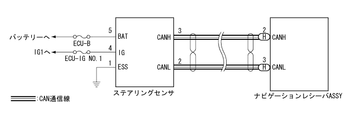
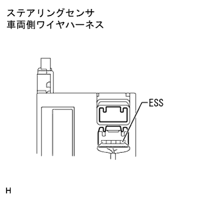
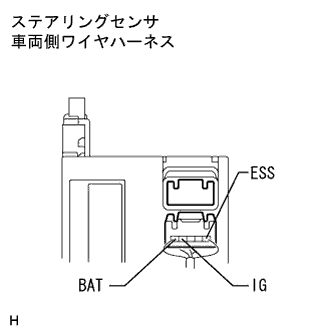

Back Guide Monitor System Estimated Course Line is not Displayed and "Guide Unavailable" is Displayed |

| Step 1 | Service Inspection (Steering Sensor) |
Service Inspection
Start diagnosis, and check whether "DTC 5C-41, 42" is displayed in the individual diagnosis. (see)
| Result | Proceed to |
|---|---|
| "DTC 5C - 42" is displayed | A |
| "DTC 5C - 41" is displayed | B |
| No DTC | C |
|
| ||||
|
| ||||
| A | |
| Step 2 | Inspect Wire Harness or Connector (Steering Sensor Power Source) |
 |
Resistance Inspection
Using SST (Toyota electrical tester), with the vehicle side wire harness connector disconnected, measure the resistance between the terminals from the back side of the connector.
| Tester Connection (Terminal Symbol) | Condition | Standard |
|---|---|---|
| 1 (ESS) - Body ground | Always | Below 1 Ω |
 |
Voltage Inspection
Using SST (Toyota electrical tester), with the vehicle side wire harness connector disconnected, measure the voltage between each terminal from the back of the connector.
| Tester Connection (Terminal Symbol) | Condition | Standard |
|---|---|---|
| 4(IG) - 1(ESS) | IG ON | 11 to 14 V |
| 5(BAT) - 1(ESS) | Always | 11 to 14 V |
|
| ||||
| OK | ||
| ||